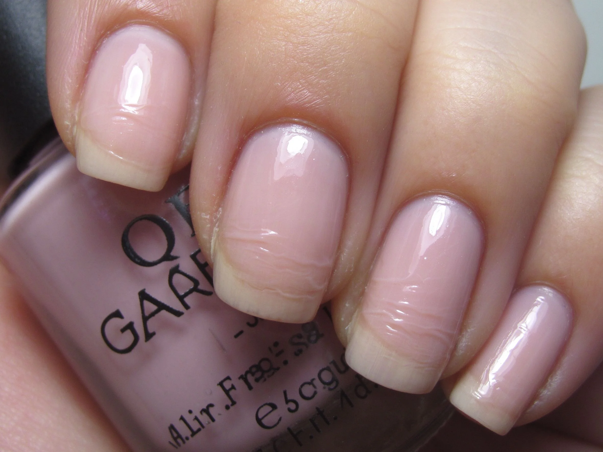

美甲固化不足與過度是什麼？進階入門攻略
照太少指甲軟、容易癢；照太多指尖發燙、甚至燙傷——固化是門平衡術。
固化不足與過度原理與辨識重點：美甲師不說的不足=不牢
這是新手最常踩到的兩個相反陷阱。固化不足（under-cure）＝膠只乾了表面、裡頭還軟，接著力差、容易起翹，未固化的成分殘留久了會致敏、紅癢。固化過度（over-cure）＝在燈下待太久，凝膠劇烈放熱，會覺得指尖刺痛、發燙，嚴重的燙傷甲床或指緣皮膚。兩者都不好，重點是抓到產品建議的『剛好時間』。
誰適合做固化不足與過度？專業師必修對號入座
這是沙龍設計師的必修功課；自己在家做、做完常覺得指緣癢或燙的人也要懂。
固化不足與過度美甲施作步驟：過度固化燙傷／不足軟嫩
先確認你燈的功率和膠建議秒數 → 照之前先把手指『放輕』，不要壓著燈 → 過程中若覺得很燙，立刻移出、休息再照 → 每次按說明計時，別自作主張加碼。
固化不足與過度優缺點分析：美甲持久度與傷甲評估
| 優點 | 說明 |
|---|---|
| 固化拿捏得當，持久、亮度、舒適度一次到位，也比較不會有過敏客訴。 | 是通用流派的招牌，進階就能上手 |
| 缺點 | 說明 |
| 要累積經驗，剛開始很難一次抓到『剛好』，需要對照產品說明慢慢修正。 | 前置與千萬別『覺得還沒乾就再照一次』——搞不好是過度固化的熱感，再照會真的燙傷。沒顧好會打折 |

固化不足與過度新手雷區：過度=發熱傷甲與常見錯誤
注意：千萬別『覺得還沒乾就再照一次』——搞不好是過度固化的熱感，再照會真的燙傷。
固化不足與過度和其他美甲做法的差別比較
固化不足常見於厚層、舊燈、波長不對；固化過度常見於高瓦數燈＋縮短距離＋重複照。一個是沒照夠，一個是照太猛。
固化不足與過度美甲常見問題 FAQ
Q：照燈時覺得很燙是正常的嗎？ A：微微溫熱可以，刺痛、像被火燙就是過度固化，要立刻停。
Q：固化不足會怎樣？ A：指甲幾天內起翹、表面霧霧的、嚴重的話指緣紅癢過敏，這時要卸乾淨重做。